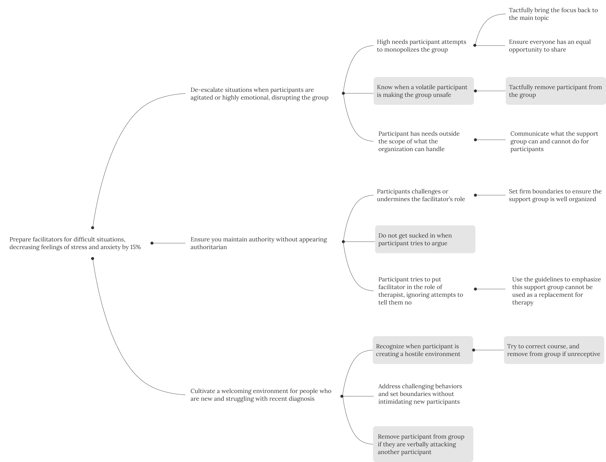
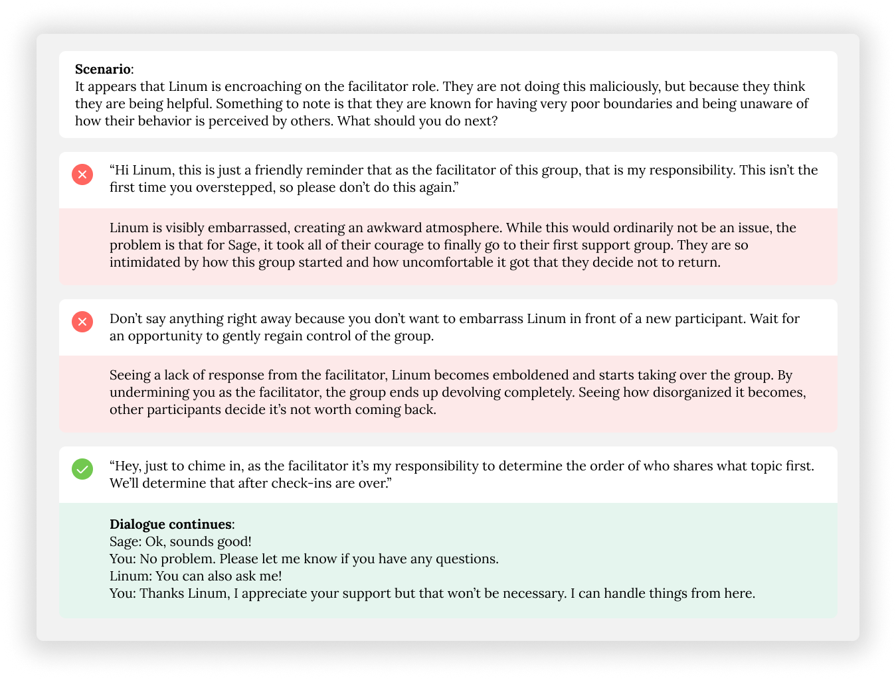
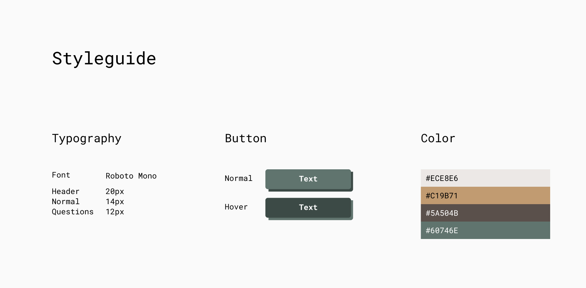
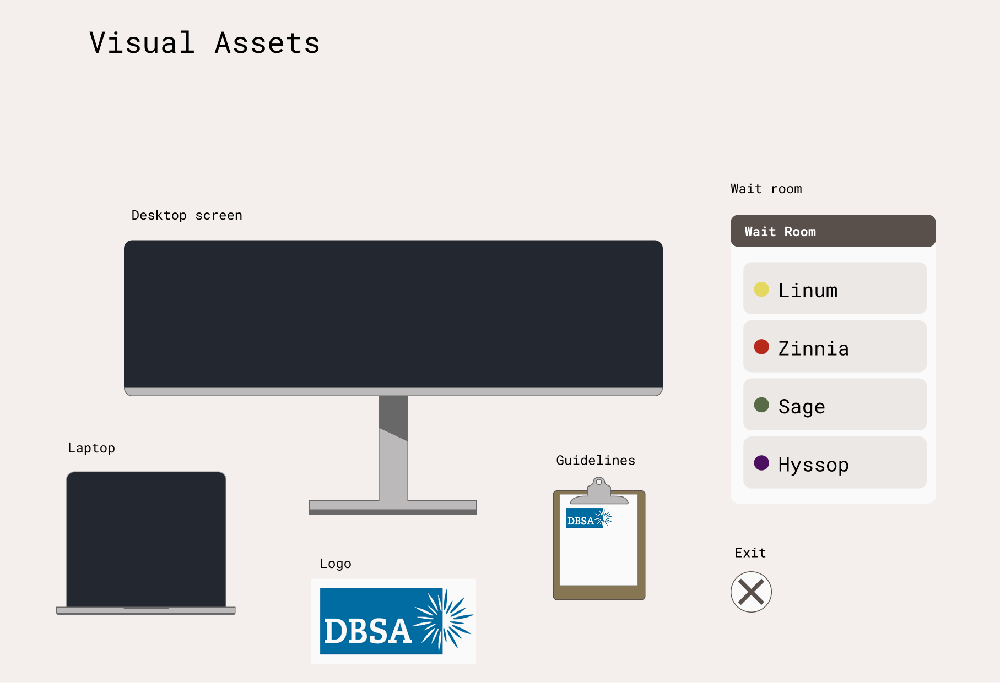
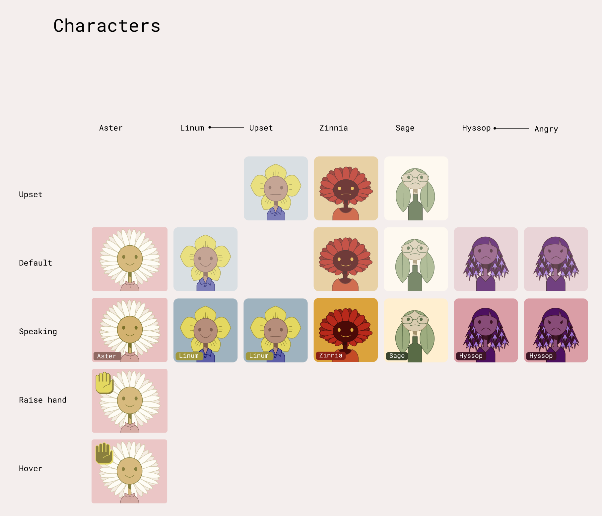
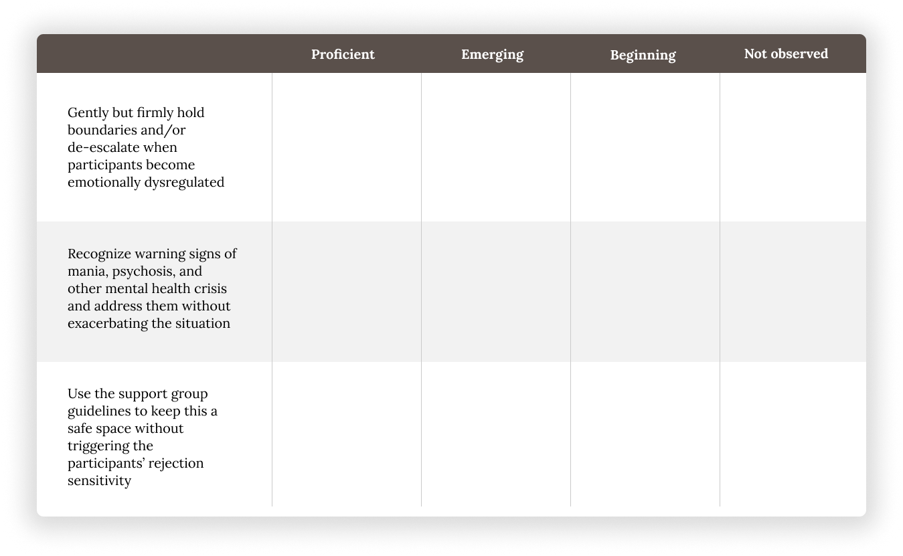

Training support group facilitators to handle challenging participants and difficult interpersonal situations using a scenario-based learning module.
Instructional Designer, Visual Designer
Worked with the facilitators and SME's who are part of the leadership team at DBSA, Silicon Valley chapter
Storyline 360, Figma
Over the past 6 years, 43% of facilitators experienced burnout and 29% left the role as a result.
Through surveys, facilitators disclosed that one of their biggest stressors comes from managing difficult situations with challenging participants. When they are caught off guard, it can negatively impact their ability to facilitate the group and leave both facilitators and participants feeling discouraged or dissatisfied. Facilitators may also experience feelings of anxiety and dread when thinking about unexpected situations in the future that they don’t know how to prepare for.
Although facilitators must go through training, courses can sometimes present scenarios in a sanitized manner without going into the grittier aspects of real-life facilitating. This can leave some facilitators feeling ill-equipped to handle more volatile situations.
This training module aims to prepare facilitators ahead of time how to confidently navigate complex interpersonal situations, which can reduce feelings of stress and anxiety. They will learn how to keep the support group safe for everyone, including themselves.
Learning goals for this module include the following:
Feel free to check out the completed module.
The overall goal for this project is to increase facilitator efficacy while decreasing their feelings of stress and anxiety, which will be measured by monitoring the facilitator feedback survey data. After several discussions with the facilitators, I identified common scenarios based on real life events where they struggled to make split second decisions on how to respond to a difficult situation. I then worked with the leadership team to determine the most appropriate course of action to ensure all facilitators are prepared to handle each conflict.

I created several personality profiles to create a realistic and demanding support group ecosystem. I also grouped together common traits or behaviors that facilitators may struggle to work with.
To avoid reinforcing gendered expectations on different personality types that can potentially cause blind spots, each person is represented as a plant. This complements the theme within mental health spaces that everyone has room to grow while portraying all participants as gender-neutral.
I designed the graphics using Figma and assigned a specific color scheme to make them easy to identify.
A regular attendee who can be socially inappropriate and has poor boundaries
A regular attendee who is friendly but has struggles most people don't know how to help
A new participant who is anxious and highly sensitive to stressful social situations
A high-needs participant with a tendency to aggressively monopolize the support group
When writing the script, the goal isn’t about teaching facilitators the “right” answers, but to give them easy-to-follow talking points that they can then use when faced with a similar situation. It also aims to train facilitators to pay attention to different contexts and personalities, which can change how they should address the situation.
For added realism, the “wrong” answers include real-life things that previous facilitators have done in similar situations when they were taken off guard or confused at how to handle a situation.

For the course, I went with a retro style with visuals similar to what you see in old school Gameboy video games. I also incorporated sounds that complement that theme, with soft colors to create a calm environment to offset the more stressful aspects of the training.
I designed the graphics using Figma, creating the following visual assets:



I used Figma to create all the graphics and animated them with motion path on Articulate 360, which can be seen here:
Level 1 - Reaction: This module had a positive reception from current facilitators, former facilitators, peer support specialists, and people new to facilitating. It achieved a 95% satisfaction score.
Level 2 - Learning: Because this module was based on previous experiences from long time facilitators, this is best suited for new facilitators. However, established facilitators still benefitted from seeing different strategies used. For instance, in scenario 7, which involves a highly emotional incident that results in a participant dropping the call, 67% of facilitators have now incorporated a new approach when leading support groups.
Level 3 - Behavior: To determine the long term changes in the behavior of current facilitators, I created a rubric to determine what the facilitators learned from the module. The goal is for 90% of facilitators to be proficient in 2 out of 3 behaviors.
Level 4 - Results: The module aims to prepare facilitators by reducing friction with the participants to offset symptoms of overwhelm and burnout. To measure the effectiveness of this training, we will check back in six months and see the turnover rate of the facilitators. Then, we will interview each facilitator to determine symptoms of burnout.
